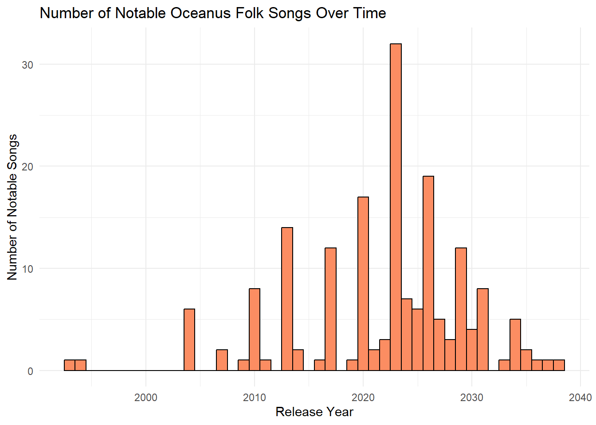

Code
pacman::p_load(tidyverse, jsonlite, SmartEDA, tidygraph, ggraph, dplyr)pacman::p_load(tidyverse, jsonlite, SmartEDA, tidygraph, ggraph, dplyr)kg <- fromJSON("data/MC1_graph.json")str(kg, max.level = 1)List of 5
$ directed : logi TRUE
$ multigraph: logi TRUE
$ graph :List of 2
$ nodes :'data.frame': 17412 obs. of 10 variables:
$ links :'data.frame': 37857 obs. of 4 variables:nodes_tbl <- as_tibble(kg$nodes)
edges_tbl <- as_tibble(kg$links) ggplot(data = edges_tbl,
aes(y = `Edge Type`)) +
geom_bar()
This ensures each id from node list is mapped to the correct row number
id_map <- tibble(id = nodes_tbl$id,
index = seq_len(
nrow(nodes_tbl)))edges_tbl <- edges_tbl %>%
left_join(id_map, by = c("source" = "id")) %>%
rename(from = index) %>%
left_join(id_map, by = c("target" = "id")) %>%
rename(to = index)edges_tbl <- edges_tbl %>%
filter(!is.na(from), !is.na(to))Lastly, tbl_graph() is used to create tiidygraph’s graph object by using the code chunk below
graph <- tbl_graph(nodes = nodes_tbl,
edges = edges_tbl,
directed = kg$directed)set.seed(1234)# Step 1: Sailor Shift 的 ID
sailor_id <- nodes_tbl %>% filter(name == "Sailor Shift") %>% pull(id)
# Step 2: 找出她表演的作品，得到 Album
sailor_albums <- edges_tbl %>%
filter(source == sailor_id,
`Edge Type` == "PerformerOf") %>%
pull(target)
# Step 3: 找出这些 Album 中包含的 Song（假设边类型为 ContainedIn）
# 即 Song -> Album 的边（source 是 Song，target 是 Album）
song_album_edges <- edges_tbl %>%
filter(`Edge Type` == "ContainedIn",
target %in% sailor_albums)
# Step 4: 找出这些 Song，限制在 2028 年之前
sailor_songs_pre2028 <- nodes_tbl %>%
filter(id %in% song_album_edges$source,
`Node Type` == "Song",
!is.na(release_date),
!is.na(as.integer(release_date)),
as.integer(release_date) < 2028)# Sailor Shift 的 ID
sailor_id <- nodes_tbl %>%
filter(name == "Sailor Shift") %>%
pull(id)
# Sailor PerformerOf 的作品（可以是 Song 或 Album）
sailor_works <- edges_tbl %>%
filter(source == sailor_id, `Edge Type` == "PerformerOf") %>%
pull(target)
# 过滤出 notable == TRUE 的作品
sailor_notable_works <- nodes_tbl %>%
filter(id %in% sailor_works,
notable == TRUE)sailor_notable_works# A tibble: 14 × 10
`Node Type` name single release_date genre notable id written_date
<chr> <chr> <lgl> <chr> <chr> <lgl> <int> <chr>
1 Album Tidal Pop W… NA 2028 Ocea… TRUE 17272 2027
2 Album Salty Dreams NA 2030 Ocea… TRUE 17273 2029
3 Album The Current… NA 2032 Ocea… TRUE 17274 2031
4 Album Coral Beats NA 2034 Ocea… TRUE 17275 2033
5 Album Tides & Bal… NA 2036 Ocea… TRUE 17276 2035
6 Album Oceanbound NA 2038 Ocea… TRUE 17277 2037
7 Album Echoes of t… NA 2040 Ocea… TRUE 17278 2039
8 Song Electric Ee… FALSE 2028 Ocea… TRUE 17280 <NA>
9 Song Moon Over t… FALSE 2034 Ocea… TRUE 17287 <NA>
10 Song Fog & Fiddle FALSE 2036 Ocea… TRUE 17290 <NA>
11 Song Stormsong TRUE 2038 Ocea… TRUE 17292 <NA>
12 Album Tidesworn B… NA 2031 Ocea… TRUE 17350 2030
13 Album Submerged S… NA 2031 Ocea… TRUE 17356 2030
14 Song Seashell Se… TRUE 2030 Ocea… TRUE 17410 <NA>
# ℹ 2 more variables: stage_name <chr>, notoriety_date <chr>library(tidyverse)
library(visNetwork)
# Step 1: 定义保留的边类型
edge_types <- c("ComposerOf", "LyricistOf", "PerformerOf", "ProducerOf",
"RecordedBy", "DistributedBy", "DirectlySamples", "CoverOf",
"InterpolatesFrom", "LyricalReferenceTo", "InStyleOf")
# Step 2: 过滤 relevant edges（这些边与 notable 的作品有关，双向）
linked_edges <- edges_tbl %>%
filter(`Edge Type` %in% edge_types,
source %in% sailor_notable_works$id | target %in% sailor_notable_works$id) %>%
mutate(type = `Edge Type`) %>%
select(from = source, to = target, type)
# Step 3: 找出所有相关节点
related_node_ids <- unique(c(linked_edges$from, linked_edges$to))
graph_nodes <- nodes_tbl %>%
filter(id %in% related_node_ids) %>%
mutate(label = name,
group = `Node Type`,
title = paste0("<b>", name, "</b><br>Type: ", `Node Type`,
"<br>Genre: ", genre,
"<br>Notable: ", notable))
# Step 4: 计算节点 degree（连接次数）来调整大小
node_degree <- linked_edges %>%
pivot_longer(cols = c(from, to), values_to = "id") %>%
count(id, name = "degree")
graph_nodes <- graph_nodes %>%
left_join(node_degree, by = "id") %>%
mutate(size = 10 + degree * 1.5)
# Step 5: 绘制 visNetwork 图
visNetwork(graph_nodes, linked_edges, height = "700px", width = "100%") %>%
visEdges(arrows = "to", color = list(color = "gray")) %>%
visOptions(highlightNearest = TRUE, nodesIdSelection = TRUE) %>%
visLegend(useGroups = TRUE) %>%
visLayout(randomSeed = 123) %>%
visGroups(groupname = "Song", color = "lightblue") %>%
visGroups(groupname = "Album", color = "lightgreen") %>%
visGroups(groupname = "Person", color = "orange") %>%
visGroups(groupname = "RecordLabel", color = "pink")# 1. 自定义每种 Edge Type 的颜色
edge_color_map <- c(
"ComposerOf" = "#1f77b4",
"LyricistOf" = "#ff7f0e",
"PerformerOf" = "#2ca02c",
"ProducerOf" = "#d62728",
"RecordedBy" = "#9467bd",
"DistributedBy" = "#8c564b",
"DirectlySamples" = "#e377c2",
"CoverOf" = "#7f7f7f",
"InterpolatesFrom" = "#bcbd22",
"LyricalReferenceTo" = "#17becf",
"InStyleOf" = "#aec7e8"
)
# 2. 创建带颜色和边悬停标题的 edges 表
linked_edges <- edges_tbl %>%
filter(`Edge Type` %in% names(edge_color_map),
source %in% sailor_notable_works$id | target %in% sailor_notable_works$id) %>%
transmute(
from = source,
to = target,
label = `Edge Type`,
title = paste("Edge Type:", `Edge Type`),
color = edge_color_map[`Edge Type`]
)visNetwork(graph_nodes, linked_edges, height = "700px", width = "100%") %>%
visEdges(arrows = "to", color = list(color = "gray")) %>%
visOptions(highlightNearest = TRUE, nodesIdSelection = TRUE) %>%
visLegend(useGroups = TRUE) %>%
visLayout(randomSeed = 123) %>%
visGroups(groupname = "Song", color = "lightblue") %>%
visGroups(groupname = "Album", color = "lightgreen") %>%
visGroups(groupname = "Person", color = "orange") %>%
visGroups(groupname = "RecordLabel", color = "pink")# 先构造一个 dynamic 的 "SailorWork" id 列表，按 release_date 和 Sailor performerOf 筛选
sailor_work_ids_by_date <- nodes_tbl %>%
filter(
`Node Type` %in% c("Song", "Album"),
!is.na(release_date),
as.integer(release_date) < 2028,
id %in% edges_tbl$target[edges_tbl$source == sailor_id & edges_tbl$`Edge Type` == "PerformerOf"]
) %>%
pull(id)
# 分类映射：替换原来的 mutate(category)
graph_nodes <- graph_nodes %>%
mutate(category = case_when(
id == sailor_id ~ "Sailor",
id %in% sailor_work_ids_by_date ~ "SailorWork",
TRUE ~ "Other"
))# 只保留与作品相关的边
related_edges_to_works <- linked_edges %>%
filter(from %in% sailor_notable_works$id | to %in% sailor_notable_works$id)
# 统计每个“Other”节点连接到作品的次数
other_node_connection <- related_edges_to_works %>%
pivot_longer(cols = c(from, to), values_to = "id") %>%
filter(!id %in% c(sailor_id, sailor_notable_works$id)) %>%
count(id, name = "connection_to_works")graph_nodes <- graph_nodes %>%
left_join(other_node_connection, by = "id") %>%
mutate(
# 固定大小
size = case_when(
category == "Sailor" ~ 40,
category == "SailorWork" ~ 30,
TRUE ~ 10 + 2 * connection_to_works # 连接越多越大
),
# 固定颜色或渐变颜色
color = case_when(
category == "Sailor" ~ "#1f78b4", # 深蓝
category == "SailorWork" ~ "#a6cee3", # 浅蓝
TRUE ~ colorRampPalette(c("#eeeeee", "#ff3300"))(max(connection_to_works, na.rm = TRUE))[connection_to_works]
)
)visNetwork(graph_nodes, linked_edges, height = "700px", width = "100%") %>%
visEdges(arrows = "to") %>%
visOptions(highlightNearest = TRUE, nodesIdSelection = TRUE) %>%
visLayout(randomSeed = 123)# Step 1: 找到 Sailor 的 notable 歌曲和专辑
# --> 已有 sailor_notable_works
# Step 2: 从这些作品出发，找被它们“影响”的作品（B类歌曲）
influence_edges <- edges_tbl %>%
filter(`Edge Type` %in% c("DirectlySamples", "InterpolatesFrom", "LyricalReferenceTo", "InStyleOf"),
source %in% sailor_notable_works$id)
# Step 3: 筛选这些 target 是否为 Song 类型
influenced_song_ids <- influence_edges$target
influenced_songs <- nodes_tbl %>%
filter(id %in% influenced_song_ids,
`Node Type` == "Song")
# Step 4: 找出这些歌的创作者信息（C类节点）
creator_edges <- edges_tbl %>%
filter(`Edge Type` %in% c("ComposerOf", "LyricistOf", "PerformerOf", "ProducerOf"),
target %in% influenced_songs$id)
# Step 5: 节点收集
creator_node_ids <- unique(creator_edges$source)
all_graph_node_ids <- unique(c(influenced_songs$id, creator_node_ids))
graph_nodes <- nodes_tbl %>%
filter(id %in% all_graph_node_ids) %>%
mutate(label = name,
group = `Node Type`,
title = paste0("<b>", name, "</b><br>Type: ", `Node Type`, "<br>Genre: ", genre))
# Step 6: 节点 degree 统计（只对 creator 有意义）
creator_degrees <- creator_edges %>%
count(source, name = "connection_count")
graph_nodes <- graph_nodes %>%
left_join(creator_degrees, by = c("id" = "source")) %>%
mutate(
size = case_when(
`Node Type` == "Song" ~ 20,
TRUE ~ 10 + 2 * connection_count
),
color = case_when(
`Node Type` == "Song" ~ "#a6cee3", # 被影响的歌：固定颜色
TRUE ~ colorRampPalette(c("#eeeeee", "#ff3300"))(max(connection_count, na.rm = TRUE))[connection_count]
)
)
# Step 7: 构建 edges
creator_edges_vis <- creator_edges %>%
transmute(from = source,
to = target,
label = `Edge Type`,
title = paste("Role:", `Edge Type`),
color = "#999999")
# Step 8: 可视化
visNetwork(graph_nodes, creator_edges_vis, height = "700px", width = "100%") %>%
visEdges(arrows = "to") %>%
visOptions(highlightNearest = TRUE, nodesIdSelection = TRUE) %>%
visLayout(randomSeed = 123)library(ggplot2)
nodes_tbl %>%
filter(`Node Type` == "Song", genre == "Oceanus Folk", !is.na(release_date)) %>%
mutate(release_year = as.integer(release_date)) %>%
filter(!is.na(release_year)) %>%
ggplot(aes(x = release_year)) +
geom_histogram(binwidth = 1, fill = "#66c2a5", color = "black") +
labs(title = "Number of Oceanus Folk Songs Over Time",
x = "Release Year", y = "Number of Songs") +
theme_minimal()
nodes_tbl %>%
filter(`Node Type` == "Song", genre == "Oceanus Folk", notable == TRUE, !is.na(release_date)) %>%
mutate(release_year = as.integer(release_date)) %>%
filter(!is.na(release_year)) %>%
ggplot(aes(x = release_year)) +
geom_histogram(binwidth = 1, fill = "#fc8d62", color = "black") +
labs(title = "Number of Notable Oceanus Folk Songs Over Time",
x = "Release Year", y = "Number of Notable Songs") +
theme_minimal()library(ggplot2)
library(dplyr)
# 1. 所有 Oceanus Folk 歌曲
all_folk <- nodes_tbl %>%
filter(`Node Type` == "Song", genre == "Oceanus Folk", !is.na(release_date)) %>%
mutate(release_year = as.integer(release_date)) %>%
count(release_year) %>%
mutate(type = "All Oceanus Folk")
# 2. notable 的 Oceanus Folk 歌曲
notable_folk <- nodes_tbl %>%
filter(`Node Type` == "Song", genre == "Oceanus Folk", notable == TRUE, !is.na(release_date)) %>%
mutate(release_year = as.integer(release_date)) %>%
count(release_year) %>%
mutate(type = "Notable Oceanus Folk")
# 3. 合并
folk_trend <- bind_rows(all_folk, notable_folk)
# 4. 绘图
ggplot(folk_trend, aes(x = release_year, y = n, color = type)) +
geom_line(size = 1.2) +
geom_point(size = 2) +
labs(title = "Oceanus Folk Songs vs Notable Ones Over Time",
x = "Release Year", y = "Number of Songs", color = "Song Type") +
theme_minimal()Warning: Using `size` aesthetic for lines was deprecated in ggplot2 3.4.0.
ℹ Please use `linewidth` instead.library(ggplot2)
library(dplyr)
# 1. 所有 Oceanus Folk 歌曲
all_folk <- nodes_tbl %>%
filter(`Node Type` == "Song", genre == "Oceanus Folk", !is.na(release_date)) %>%
mutate(release_year = as.integer(release_date)) %>%
count(release_year) %>%
mutate(type = "All Oceanus Folk")
# 2. notable 的 Oceanus Folk 歌曲
notable_folk <- nodes_tbl %>%
filter(`Node Type` == "Song", genre == "Oceanus Folk", notable == TRUE, !is.na(release_date)) %>%
mutate(release_year = as.integer(release_date)) %>%
count(release_year) %>%
mutate(type = "Notable Oceanus Folk")
# 3. 合并
folk_trend <- bind_rows(all_folk, notable_folk)
# 4. 绘图 + reference line
ggplot(folk_trend, aes(x = release_year, y = n, color = type)) +
geom_line(size = 1.2) +
geom_point(size = 2) +
geom_vline(xintercept = 2028, linetype = "dashed", color = "grey30", linewidth = 1) +
annotate("text", x = 2028, y = max(folk_trend$n, na.rm = TRUE),
label = "Sailor Shift goes viral", vjust = -0.5, hjust = 1.1, size = 4) +
labs(title = "Oceanus Folk Songs vs Notable Ones Over Time",
x = "Release Year", y = "Number of Songs", color = "Song Type") +
theme_minimal()
###最终版
library(ggplot2)
library(dplyr)
library(plotly)
Attaching package: 'plotly'The following object is masked from 'package:ggplot2':
last_plotThe following object is masked from 'package:stats':
filterThe following object is masked from 'package:graphics':
layout# 数据准备
all_folk <- nodes_tbl %>%
filter(`Node Type` == "Song", genre == "Oceanus Folk", !is.na(release_date)) %>%
mutate(release_year = as.integer(release_date),
notable = FALSE) %>%
count(release_year, notable, name = "count")
notable_folk <- nodes_tbl %>%
filter(`Node Type` == "Song", genre == "Oceanus Folk", notable == TRUE, !is.na(release_date)) %>%
mutate(release_year = as.integer(release_date),
notable = TRUE) %>%
count(release_year, notable, name = "count")
# 合并数据
trend_data <- bind_rows(all_folk, notable_folk) %>%
mutate(type = ifelse(notable, "Notable Oceanus Folk", "All Oceanus Folk"))
# 创建 ggplot 图，加 group
p <- ggplot(trend_data, aes(x = release_year, y = count, color = type, group = type,
text = paste0("Year: ", release_year,
"<br>Count: ", count,
"<br>Notable: ", notable))) +
geom_line(size = 1.2) +
geom_point(size = 2) +
geom_vline(xintercept = 2028, linetype = "dashed", color = "gray40", linewidth = 1) +
annotate("text", x = 2028, y = max(trend_data$count), label = "Sailor viral", vjust = -0.5, hjust = 1.1) +
labs(title = "Interactive Trend of Oceanus Folk Songs",
x = "Release Year", y = "Song Count", color = "Type") +
theme_minimal()
# 转为交互式
ggplotly(p, tooltip = "text")library(tidyverse)
library(visNetwork)
# Step 0: 过滤 Oceanus Folk 的作品（歌曲和专辑）
oceanus_folk_works <- nodes_tbl %>%
filter(`Node Type` %in% c("Song", "Album"),
genre == "Oceanus Folk")
# Step 1: 定义保留的边类型（影响类）
edge_types <- c("DirectlySamples", "InterpolatesFrom", "LyricalReferenceTo", "InStyleOf")
# Step 2: 过滤相关边（连接到 Oceanus Folk 歌或专辑的影响边）
linked_edges <- edges_tbl %>%
filter(`Edge Type` %in% edge_types,
source %in% oceanus_folk_works$id | target %in% oceanus_folk_works$id) %>%
mutate(type = `Edge Type`) %>%
select(from = source, to = target, type)
# Step 3: 找出所有相关节点
related_node_ids <- unique(c(linked_edges$from, linked_edges$to))
graph_nodes <- nodes_tbl %>%
filter(id %in% related_node_ids) %>%
mutate(
label = name,
group = genre, # üéØ Áî® genre ÊéßÂà∂È¢úËâ≤
title = paste0("<b>", name, "</b><br>Type: ", `Node Type`,
"<br>Genre: ", genre,
"<br>Notable: ", notable)
)
# Step 4: 计算每个节点连接次数，用于控制点大小
node_degree <- linked_edges %>%
pivot_longer(cols = c(from, to), values_to = "id") %>%
count(id, name = "degree")
graph_nodes <- graph_nodes %>%
left_join(node_degree, by = "id") %>%
mutate(size = 10 + degree * 1.5)
# Step 5: 生成交互式网络图
visNetwork(graph_nodes, linked_edges, height = "700px", width = "100%") %>%
visEdges(arrows = "to", color = list(color = "gray")) %>%
visOptions(highlightNearest = TRUE, nodesIdSelection = TRUE) %>%
visLegend(useGroups = TRUE) %>%
visLayout(randomSeed = 123)library(tidyverse)
library(visNetwork)
# Step 0: 过滤 Oceanus Folk 的作品（歌曲 + 专辑）
oceanus_folk_works <- nodes_tbl %>%
filter(`Node Type` %in% c("Song", "Album"),
genre == "Oceanus Folk")
# Step 1: 定义保留的边类型
edge_types <- c("DirectlySamples", "InterpolatesFrom", "LyricalReferenceTo", "InStyleOf")
# Step 2: 筛选与 Oceanus Folk 作品相关的边（谁影响它们）
linked_edges <- edges_tbl %>%
filter(`Edge Type` %in% edge_types,
source %in% oceanus_folk_works$id | target %in% oceanus_folk_works$id) %>%
mutate(type = `Edge Type`) %>%
select(from = source, to = target, type)
# Step 3: 获取所有相关节点
related_node_ids <- unique(c(linked_edges$from, linked_edges$to))
graph_nodes <- nodes_tbl %>%
filter(id %in% related_node_ids) %>%
mutate(label = name,
group = genre, # 用 genre 作为 group（将用于 legend 筛选）
title = paste0("<b>", name, "</b><br>Type: ", `Node Type`,
"<br>Genre: ", genre,
"<br>Notable: ", notable))
# Step 4: 计算 degree（连接次数）
node_degree <- linked_edges %>%
pivot_longer(cols = c(from, to), values_to = "id") %>%
count(id, name = "degree")
graph_nodes <- graph_nodes %>%
left_join(node_degree, by = "id") %>%
mutate(
degree = replace_na(degree, 0),
size = 10 + degree * 1.5,
# 设置颜色规则：
color = case_when(
genre == "Oceanus Folk" ~ "#999999", # 灰色
TRUE ~ colorRampPalette(c("#fee5d9", "#de2d26"))(max(degree, na.rm = TRUE))[degree]
)
)
# Step 5: 画交互式 visNetwork 图
visNetwork(graph_nodes, linked_edges, height = "700px", width = "100%") %>%
visEdges(arrows = "to", color = list(color = "gray")) %>%
visNodes(color = list(background = graph_nodes$color)) %>%
visOptions(highlightNearest = TRUE, nodesIdSelection = TRUE) %>%
visLegend(useGroups = TRUE) %>%
visLayout(randomSeed = 123)library(tidyverse)
# Step 1: 边类型
edge_types <- c("DirectlySamples", "InterpolatesFrom", "LyricalReferenceTo", "InStyleOf")
# Step 2: 找出 Oceanus Folk 的歌曲和专辑
oceanus_targets <- nodes_tbl %>%
filter(`Node Type` %in% c("Song", "Album"),
genre == "Oceanus Folk") %>%
pull(id)
# Step 3: 找出指向 Oceanus Folk 的边
influencing_edges <- edges_tbl %>%
filter(`Edge Type` %in% edge_types,
target %in% oceanus_targets)
# Step 4: 找出边的 source（谁影响了 Oceanus Folk）
influencing_genres <- influencing_edges %>%
left_join(nodes_tbl %>% select(id, genre), by = c("source" = "id")) %>%
filter(!is.na(genre))
# Step 5: 统计 genre 的频率
genre_influence_count <- influencing_genres %>%
count(genre, name = "count") %>%
arrange(desc(count))
# Step 6: 绘图
ggplot(genre_influence_count, aes(x = reorder(genre, count), y = count)) +
geom_col(fill = "steelblue") +
coord_flip() +
labs(title = "Genres being Most Influenced by Oceanus Folk",
x = "Genre",
y = "Number of Influential Edges (to Oceanus Folk)") +
theme_minimal()